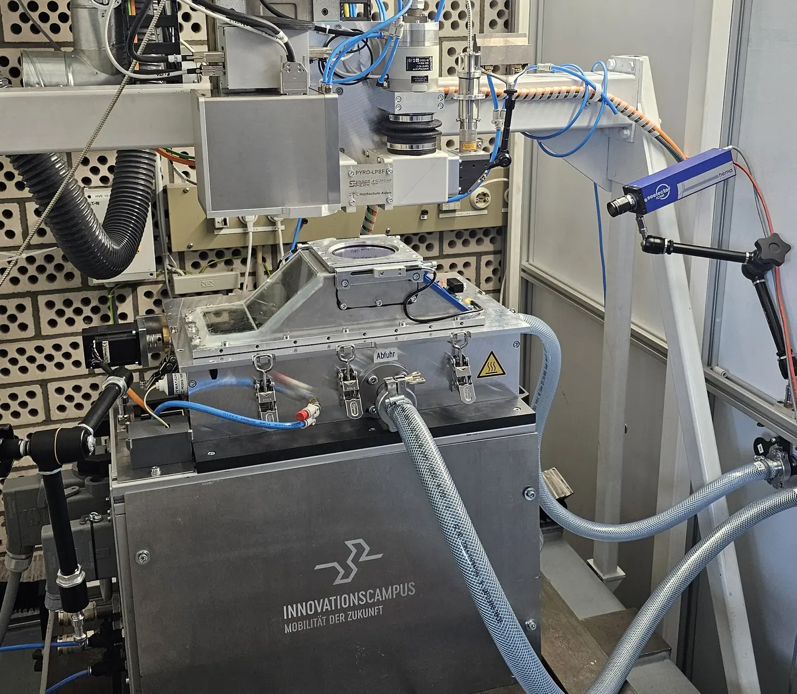
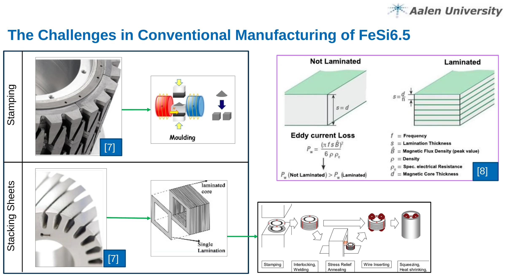
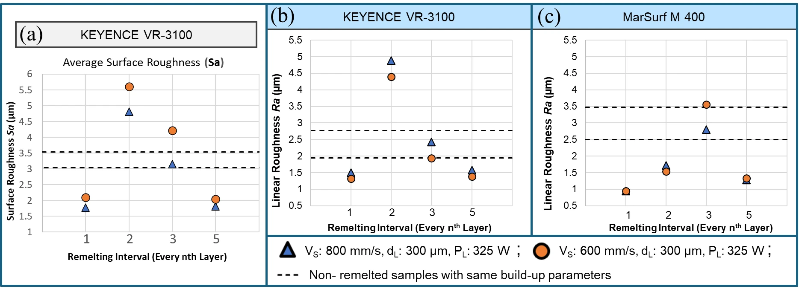
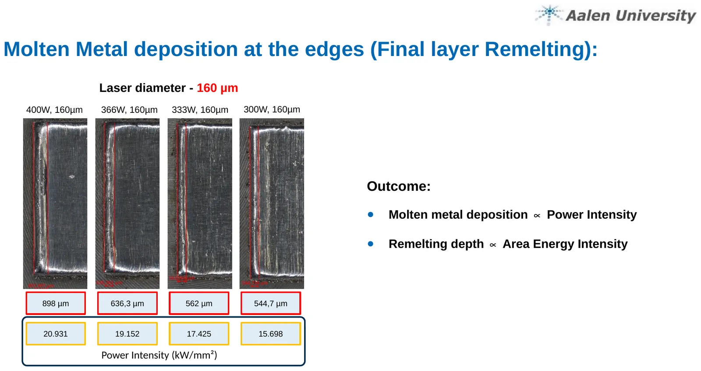
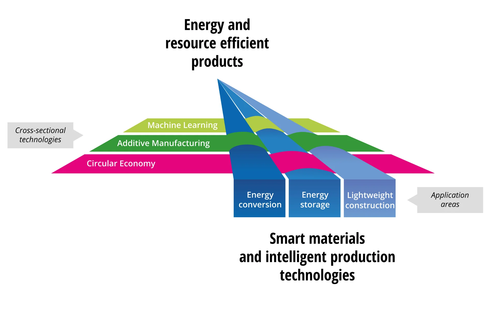

Production of soft magnetic FeSi6.5 parts with precise layer topography using integrated laser remelting at PBF-LB/M
Peer-reviewed publication · Procedia CIRP 124 (2024)
DOI: 10.1016/j.procir.2024.08.060
Developed within my M.Sc. Advanced Materials and Manufacturing thesis at the LaserApplication Center (LAZ), Hochschule Aalen, inside the SmartPro / Smart-ADD research programme.
First supervisor: Prof. Dr. Harald Riegel · Second supervisor: Prof. Dr. Dagmar Goll · Thesis submitted September 2025, defended October 2025.
What the paper reports, in plain terms
Electric motors lose energy to eddy currents. The standard fix is lamination: stack thin, individually insulated steel sheets so the current has no continuous path to flow along.
FeSi6.5 is the best alloy for that job, with up to 30% lower core losses than conventional silicon steel. It is also so brittle that it shatters in a rolling mill, so it cannot be made into sheet, so almost nobody uses it. The industry designs motors around what the mill can produce rather than what the magnetic circuit wants.
3D printing never asks the material to survive being bent or stamped, so it removes that barrier, but it introduces a new one. Printed surfaces are rough, and a rough layer needs a thicker insulating coat, which makes the laminations thicker, which brings the eddy-current losses straight back.
What this paper shows: remelting the top layer with a widened laser beam, in the gentle heat-conduction regime, makes it 38% smoother in a single pass. Repeating the pass during the build brings the surface down to Sa 1.77 µm, the precision needed for thin insulating layers. Remelting does not change how the brittle alloy cracks, and it only slightly modifies its grain structure.
Sa 4.55 µm → 2.81 µm
more than 41% below its reference
down from 59 kW/mm²
optimised build point
The machine the work ran on
Everything in the paper was produced on the ALC2, a self-built PBF-LB/M research system at the LaserApplication Center. A research machine is not a product machine: the optical train, the gas path and the monitoring are all open to be changed, which is the reason a study like this one is possible at all.
The animation above is a section through this system. The photograph below is the system itself, with three of its parts in one frame: the PYRO-LPBF scanner head on top, the build chamber with its gas inlet and extraction lines, and the hema ICAM melt-pool camera on an articulated arm at the right. The camera is mounted off-axis, which is why it sees the pool at an angle rather than down the beam.
The gas circulation feeding that chamber is my own design work, carried out before the thesis campaign and used throughout it.

Why the problem is worth solving
| The EU ends new combustion-engine sales in 2035 | Every replacement drivetrain needs a soft magnetic core |
| 40–100 kg of soft magnetic material per EV motor | Magnets exceed 60% of the total mass of motors, generators and transformers |
| 40–50% of total energy losses in these machines are eddy-current losses | The single largest addressable loss mechanism |
| FeSi6.5 cuts core losses by up to 30% vs. conventional silicon steel | And it cannot be rolled, stamped or stacked, which is why nobody uses it |
The best available soft magnetic alloy is locked out of production by its own brittleness. Printing is the only route that never asks the material to survive deformation.

The four findings
1. The surface gets dramatically smoother
A single remelting pass with a 300 µm beam at 325 W and 800 mm/s cut the top-layer roughness from Sa 4.55 µm to 2.81 µm (38.3%). Built into the process cyclically, the same exposure reached Sa 1.77 µm with every layer, more than 41% below the reference parts in the same build, and Sa 1.81 µm with every fifth layer. In the thesis, tactile Ra fell below 1.0 µm with every-layer remelting.
2. A wider beam changes the melt regime
The build-up runs at about 59 kW/mm² in the deep-penetration regime, with melt tracks about 259 µm deep, more than six layer heights. Defocusing to a 300 µm beam cut the average intensity to 4.5 kW/mm². Up to 350 W the remelt then stays in a stable heat-conduction regime, only 52-82 µm deep, and the scan tracks flow together into a closed, homogeneous surface. From 375 W heat builds up and the process flips back towards deep penetration.
Every-layer remelting slightly modifies the grain structure, with sporadic epitaxial grain growth across several tracks and layers.


3. Remelting does not change how the alloy cracks
FeSi6.5 shows sporadic cracks in the layer surface, and remelting neither adds to them nor removes them; they are what limits the achievable surface quality. Remelting every layer also rounds the part edges and builds up material at the contour. Remelting every fifth layer gives almost the same surface with less loss of accuracy, which makes it the practical setting.
4. Two effects that look like one, separated
Molten metal building up at the part edges scales with power intensity. How deep the remelt reaches scales with areal energy intensity. Treating them as two separate levers is what made a stable processing window achievable. A single volumetric energy density figure blends them together and cannot resolve the trade-off.
That is the difference between tuning a process and understanding it.
Where it applies
| E-mobility & traction drives | Laminated rotor and stator geometries with lower eddy-current losses, including internal cooling channels and topology-optimised flux paths that sheet stacking cannot produce |
| Transformers & inductors | High-silicon-iron cores in geometries unavailable to conventional lamination |
| Electrical machine development | Rapid iteration of magnetic-circuit geometry with no lamination tooling: a genuine functional prototype route |
| Metal AM process engineering | Heat-conduction cyclic remelting transfers to any alloy where layer topography, surface finish or internal interface quality is the governing requirement |
| Brittle-alloy processing generally | A scalable AM route for materials that cannot survive conventional forming |
The process knowledge developed here has already supported fabrication of larger components exceeding 50 layers in ongoing university projects, validating the scalability of the optimised parameters.
What comes next
Integrate multi-material lamination with insulating phases · implement real-time melt-pool monitoring with adaptive laser control · conduct direct magnetic property testing (permeability, coercivity, core loss) · extend the approach to Fe-Co and Fe-Ni soft magnetic alloys · investigate post-build heat treatment for stress relief and enhanced magnetic softness.

Give me an alloy with no stable process and I can build the window from first principles, verify it with my own metallography, explain the mechanism rather than the correlation, and write it up to a standard that survives peer review.
The experimental detail is on the project page: the three phases, the parameter matrices and the full verification chain.